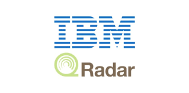
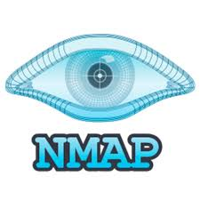

Technical Skills
- Networking fundamentals
- TCP/IP protocol analysis
- Operating systems (Windows & Linux)
- Log analysis and threat monitoring
- Risk awareness and security principles
- Basic protocol analysis
- Incident response fundamentals
- Virtual lab environments
Security Tools

